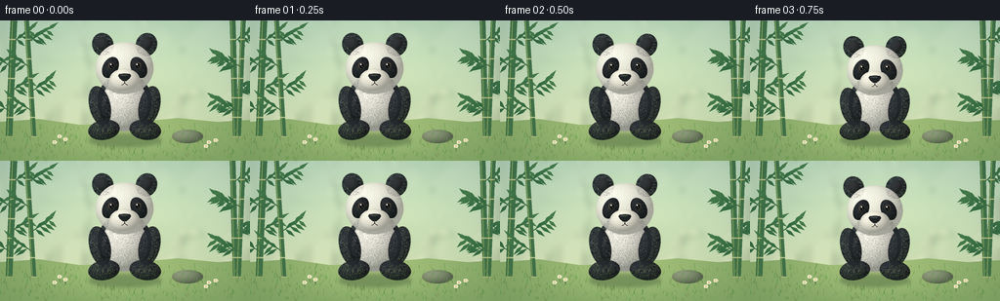
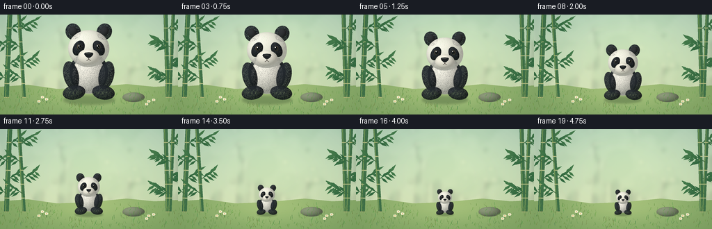

CODING AGENTS AS PIXEL WORLD MODELS
traex/GPT-6.1-Sol · instance_preservation_0046
点击播放 · 原生 RGB 像素
逐轮保存的候选
回放视频、检查图与代码变化。
每份候选均可单独播放。实际图片检查记录在下方工具轨迹中。
候选 01播放与检查图
点击播放 · 原生 RGB 像素


展开代码变化
--- 上一保存版本
+++ 本次保存版本
@@ -0,0 +1,226 @@
+"""A hand-rendered, softly lit panda shrinking in a fixed bamboo clearing.
+Only mathematical geometry, procedural texture and Pillow are used.
+"""
+from pathlib import Path
+import json
+import math
+import numpy as np
+from PIL import Image, ImageDraw, ImageFilter
+import artifact_io
+
+ROOT = Path(__file__).resolve().parent
+SPEC = json.loads((ROOT / 'task_spec.json').read_text())
+W,H = SPEC['width'], SPEC['height']
+SS = 4
+rng = np.random.default_rng(4618)
+
+
+def ellipse_layer(im, center, radius, color, angle=0, fur=0, seed=1, depth=.65):
+ """Shaded ellipsoidal fur surface, with a soft silhouette and directional hairs."""
+ scale=4
+ cx,cy=np.array(center)*scale
+ rx,ry=np.array(radius)*scale
+ a=math.radians(angle)
+ ca,sa=math.cos(a),math.sin(a)
+ ex=abs(rx*ca)+abs(ry*sa)+6
+ ey=abs(rx*sa)+abs(ry*ca)+6
+ x0=max(0,int(cx-ex)); x1=min(im.width,int(cx+ex+1))
+ y0=max(0,int(cy-ey)); y1=min(im.height,int(cy+ey+1))
+ yy,xx=np.mgrid[y0:y1,x0:x1]
+ dx=xx-cx;dy=yy-cy
+ u=(ca*dx+sa*dy)/rx
+ v=(-sa*dx+ca*dy)/ry
+ rr=u*u+v*v
+ z=np.sqrt(np.maximum(0,1-rr))
+ normal_x=u*ca-v*sa
+ normal_y=u*sa+v*ca
+ light=np.maximum(0,-.43*normal_x-.49*normal_y+.76*z)
+ r=np.random.default_rng(seed)
+ grain=r.normal(0,1.6,rr.shape)
+ # Broad warm key light and greenish reflected ground light.
+ shade=.64+.37*light
+ rgb=np.array(color)[None,None,:]*shade[:,:,None]
+ rgb+=grain[:,:,None]
+ rgb+=np.maximum(0,normal_y)[:,:,None]*np.array([-1,3,1])[None,None,:]
+ if max(color)<80:
+ rgb+=light[:,:,None]*np.array([5,7,9])
+ alpha=np.clip((1-rr)*min(rx,ry)/1.6+.5,0,1)*255
+ arr=np.concatenate([np.clip(rgb,0,255),alpha[:,:,None]],axis=2).astype(np.uint8)
+ layer=Image.new('RGBA',im.size)
+ layer.paste(Image.fromarray(arr,'RGBA'),(x0,y0))
+ if fur:
+ d=ImageDraw.Draw(layer)
+ count=int(rx*ry*.10*fur)
+ for _ in range(count):
+ theta=r.uniform(0,2*math.pi)
+ rad=np.sqrt(r.random())*.997
+ uu=rad*math.cos(theta);vv=rad*math.sin(theta)
+ px=cx+rx*uu*ca-ry*vv*sa
+ py=cy+rx*uu*sa+ry*vv*ca
+ # Fur runs away from the crown and follows the curved surface.
+ direction=math.atan2(vv*.7+.3,uu*.6)
+ direction+=r.normal(0,.28)
+ length=r.uniform(1.5,4.5)*fur
+ nx=uu*ca-vv*sa; ny=uu*sa+vv*ca
+ nz=math.sqrt(max(0,1-rad*rad))
+ li=max(0,-.43*nx-.49*ny+.76*nz)
+ co=np.array(color)*(.64+.37*li)+r.uniform(-6,8)
+ if max(color)<80:co+=np.array([5,7,9])*li
+ co=np.clip(co,0,255).astype(int)
+ d.line([(px,py),(px+math.cos(direction+a)*length,py+math.sin(direction+a)*length)],fill=(*co,110 if rad<.96 else 170),width=1)
+ im.alpha_composite(layer)
+
+
+def make_panda():
+ im=Image.new('RGBA',(720,788))
+ # Silhouette: a round seated giant panda, not changing pose or identity.
+ black=(33,37,40)
+ ivory=(251,248,234)
+ ellipse_layer(im,(90,126),(46,49),black,fur=1,seed=12)
+ ellipse_layer(im,(90,131),(39,46),ivory,fur=1.2,seed=13)
+ ellipse_layer(im,(48,133),(18,34),black,angle=-13,fur=1.2,seed=14)
+ ellipse_layer(im,(132,133),(18,34),black,angle=13,fur=1.2,seed=15)
+ ellipse_layer(im,(55,174),(27,17),black,angle=-9,fur=1.3,seed=16)
+ ellipse_layer(im,(125,174),(27,17),black,angle=9,fur=1.3,seed=17)
+ # Large round, velvety ears tucked behind the face.
+ ellipse_layer(im,(53,29),(18,20),black,angle=-22,fur=1.2,seed=18)
+ ellipse_layer(im,(127,29),(18,20),black,angle=22,fur=1.2,seed=19)
+ ellipse_layer(im,(53,28),(10,12),(47,48,48),angle=-22,fur=.4,seed=20)
+ ellipse_layer(im,(127,28),(10,12),(47,48,48),angle=22,fur=.4,seed=21)
+ ellipse_layer(im,(90,69),(49,44),ivory,fur=1.3,seed=22)
+ # Characteristic tear-shaped, angled black eye patches.
+ ellipse_layer(im,(66,68),(13,19),(30,33,35),angle=27,fur=.6,seed=23)
+ ellipse_layer(im,(114,68),(13,19),(30,33,35),angle=-27,fur=.6,seed=24)
+ # Slightly projecting white cheek / muzzle volume.
+ ellipse_layer(im,(90,89),(26,19),(251,247,230),fur=.8,seed=25)
+ # Soft cheek dimples and glossy deep-brown eyes.
+ ellipse_layer(im,(67,65),(5.5,6.2),(81,74,61),seed=26)
+ ellipse_layer(im,(113,65),(5.5,6.2),(81,74,61),seed=27)
+ ellipse_layer(im,(68,65),(3.7,4.5),(10,14,15),seed=28)
+ ellipse_layer(im,(112,65),(3.7,4.5),(10,14,15),seed=29)
+ d=ImageDraw.Draw(im)
+ def e(box,fill):d.ellipse(tuple(v*4 for v in box), fill=fill)
+ e((65.5,61.6,68,64.0),(255,254,244,255))
+ e((109.5,61.6,112,64.0),(255,254,244,255))
+ e((68.6,66.4,69.5,67.3),(173,179,172,255))
+ e((112.6,66.4,113.5,67.3),(173,179,172,255))
+ # Rounded triangular nose, small mouth with a content expression.
+ pts=[(79,82),(81,79),(90,78),(99,79),(101,82),(98,87),(93,91),(87,91),(82,87)]
+ d.polygon([(x*4,y*4)for x,y in pts],fill=(30,34,35,255))
+ e((82,79.5,95,82.5),(62,66,65,255))
+ d.line([(90*4,90*4),(90*4,95*4)],fill=(55,49,46,255),width=5)
+ # Mouth drawn as smooth short arcs, not a human grin.
+ d.arc((78*4,88*4,90*4,98*4),0,82,fill=(60,52,47,255),width=4)
+ d.arc((90*4,88*4,102*4,98*4),98,180,fill=(60,52,47,255),width=4)
+ # Hints of toe divisions on the black feet.
+ for cx in [55,125]:
+ for k in [-9,0,9]:
+ d.arc(((cx+k-3)*4,172*4,(cx+k+3)*4,182*4),180,270,fill=(63,66,66,125),width=3)
+ return im.crop((88,32,636,774))
+
+
+def make_background():
+ ww,hh=W*SS,H*SS
+ yy,xx=np.mgrid[0:hh,0:ww]
+ X=xx/SS;Y=yy/SS
+ t=np.clip(Y/125,0,1)[:,:,None]
+ sky=np.array([184,214,190])*(1-t)+np.array([218,230,185])*t
+ glow=np.exp(-((X-141)**2/8500+(Y-40)**2/3300))
+ sky+=glow[:,:,None]*np.array([17,14,6])
+ sky+=rng.normal(0,.38,(hh,ww,1))
+ bg=Image.fromarray(np.clip(sky,0,255).astype(np.uint8),'RGB').convert('RGBA')
+ far=Image.new('RGBA',bg.size);d=ImageDraw.Draw(far)
+ def ell(box,fill): d.ellipse(tuple(int(v*SS) for v in box),fill=fill)
+ # Out-of-focus bamboo grove, a pale sunlit opening at center.
+ for _ in range(35):
+ x=rng.uniform(-10,266); width=rng.uniform(2,5)
+ col=(100+rng.integers(0,45),151+rng.integers(0,25),115+rng.integers(0,26),rng.integers(35,100))
+ d.line([(int(x*SS),0),(int((x+rng.uniform(-10,10))*SS),int(112*SS))],fill=tuple(map(int,col)),width=int(width*SS))
+ for _ in range(70):
+ x=rng.uniform(-10,266); y=rng.uniform(-10,95);r=rng.uniform(4,22)
+ ell((x-r,y-r,x+r,y+r),(95,148,101,int(rng.uniform(9,30))))
+ for _ in range(16):
+ x=rng.uniform(60,210);y=rng.uniform(0,90);r=rng.uniform(1.5,5)
+ ell((x-r,y-r,x+r,y+r),(255,252,210,55))
+ far=far.filter(ImageFilter.GaussianBlur(3*SS)); bg.alpha_composite(far)
+ # Gently curved meadow stays completely fixed, establishing the size change.
+ ground=Image.new('RGBA',bg.size);gd=ImageDraw.Draw(ground)
+ points=[(0,104),(40,101),(82,107),(131,105),(182,100),(222,104),(256,102),(256,144),(0,144)]
+ gd.polygon([(x*SS,y*SS)for x,y in points], fill=(132,169,103,255))
+ gy,gx=np.mgrid[0:hh,0:ww]
+ mask=np.array(ground)[:,:,3]/255
+ base=np.array(ground).astype(float)
+ light=np.exp(-((gx/SS-130)**2/9000+(gy/SS-109)**2/1000))
+ for c,amount in enumerate([35,26,21]):base[:,:,c]+=light*amount
+ base[:,:,0:3]+=rng.normal(0,1,(hh,ww,1))
+ ground=Image.fromarray(np.clip(base,0,255).astype('uint8'));bg.alpha_composite(ground)
+ # Foreground bamboo stems, with fine joints and lance-shaped leaves.
+ bd=ImageDraw.Draw(bg)
+ for x,lean,wide in [(14,-6,7),(27,9,5),(238,4,6),(249,-6,5)]:
+ for y in range(-20,116,20):
+ x0=x+lean*y/144;x1=x+lean*(y+20)/144
+ bd.line([(x0*SS,y*SS),(x1*SS,(y+19)*SS)], fill=(65,115,74,255),width=int(wide*SS))
+ bd.line([((x0-1.4)*SS,y*SS),((x1-1.4)*SS,(y+19)*SS)], fill=(130,164,93,255),width=SS)
+ bd.line([((x1-wide*.5)*SS,(y+19)*SS),((x1+wide*.5)*SS,(y+19)*SS)],fill=(180,185,122,255),width=SS)
+ for by,side in [(22,1),(48,-1),(73,1),(93,-1)]:
+ bx=x+lean*by/144
+ endx=bx+side*rng.uniform(19,28);endy=by-15
+ bd.line([(bx*SS,by*SS),(endx*SS,endy*SS)],fill=(67,111,68,255),width=SS)
+ for i in range(4):
+ fx=bx+(endx-bx)*(i+1)/5;fy=by+(endy-by)*(i+1)/5
+ for sg in [-1,1]:
+ tx=fx+side*rng.uniform(7,13);ty=fy+sg*rng.uniform(5,10)
+ perp=np.array([-(ty-fy),tx-fx]);perp=perp/(np.linalg.norm(perp)+1e-6)*1.8
+ poly=[(fx,fy),(fx+(tx-fx)*.48+perp[0],fy+(ty-fy)*.48+perp[1]),(tx,ty),(fx+(tx-fx)*.48-perp[0],fy+(ty-fy)*.48-perp[1])]
+ bd.polygon([(px*SS,py*SS)for px,py in poly],fill=(53+i*5,108+i*5,66+i*3,255))
+ # A low smooth rock on the right gives an unambiguous, stationary size reference.
+ ellipse_layer(bg,(192,119),(16,7),(143,155,124),seed=52)
+ bd=ImageDraw.Draw(bg)
+ # Grass and a few small daisies; no scene motion or camera zoom.
+ for _ in range(420):
+ x=rng.uniform(0,256);y=rng.uniform(109,145)
+ if 91<x<165 and y<128:continue
+ length=rng.uniform(1.2,5.5)
+ co=(int(rng.uniform(85,125)),int(rng.uniform(135,168)),int(rng.uniform(64,90)),210)
+ bd.line([(x*SS,y*SS),((x+rng.uniform(-2,2))*SS,(y-length)*SS)],fill=co,width=rng.choice([1,2]))
+ for x,y in [(61,124),(67,127),(56,130),(214,130),(221,128),(211,134)]:
+ bd.line([(x*SS,y*SS),(x*SS,(y-5)*SS)],fill=(63,113,65,255),width=2)
+ for a in np.linspace(0,2*math.pi,5,endpoint=False):
+ cx=x+math.cos(a)*1.5;cy=y-5+math.sin(a)*1.2
+ bd.ellipse(((cx-.9)*SS,(cy-.8)*SS,(cx+.9)*SS,(cy+.8)*SS),fill=(247,244,213,255))
+ bd.ellipse(((x-.55)*SS,(y-5.55)*SS,(x+.55)*SS,(y-4.45)*SS),fill=(220,179,64,255))
+ # Gentle photographic vignette.
+ arr=np.asarray(bg).copy().astype(float)
+ v=np.clip(((X-128)/170)**2+((Y-65)/120)**2,0,1)
+ arr[:,:,:3]*=(1-.075*v[:,:,None])
+ return Image.fromarray(arr.astype(np.uint8),'RGBA')
+
+
+def generate():
+ panda=make_panda()
+ bg=make_background()
+ frames=[]
+ for index in range(SPEC['frames']):
+ t=np.clip((index-1)/16,0,1)
+ ease=t*t*(3-2*t)
+ size=1-.67*ease
+ target_h=112*size
+ ph=round(target_h*SS)
+ pw=round(ph*panda.width/panda.height)
+ frame=bg.copy()
+ # Ground-contact shadow contracts with the animal, rather than a camera zoom.
+ shadow=Image.new('RGBA',frame.size);sd=ImageDraw.Draw(shadow)
+ rx=37*size;ry=6.4*size
+ sd.ellipse(((128-rx)*SS,(123-ry)*SS,(128+rx)*SS,(123+ry)*SS),fill=(42,65,39,86))
+ shadow=shadow.filter(ImageFilter.GaussianBlur((1.5*size+.35)*SS))
+ frame.alpha_composite(shadow)
+ p=panda.resize((pw,ph),Image.Resampling.LANCZOS)
+ frame.alpha_composite(p,(round(128*SS-pw/2),round(124*SS-ph)))
+ frame=frame.convert('RGB').resize((W,H),Image.Resampling.LANCZOS)
+ frames.append(np.asarray(frame,dtype=np.uint8))
+ return np.stack(frames)
+
+if __name__=='__main__':
+ frames=generate()
+ artifact_io.save(frames,ROOT)
+ print(f'Saved {frames.shape[0]} RGB frames ({frames.shape[2]}x{frames.shape[1]}) to {ROOT}')
可观测工具轨迹
实际执行的命令与返回图片。
命令 1exit 0
/bin/bash -lc "ls -la && cat prompt.txt && printf '\\n---RULES---\\n' && cat GENERATION_RULES.md && printf '\\n---SPEC---\\n' && cat task_spec.json"
命令 2exit 0
/bin/bash -lc "cat artifact_io.py && printf '\\n---PACKAGES---\\n' && python - <<'PY' import importlib.util for x in ['numpy','PIL','cv2','imageio','scipy']: print(x, bool(importlib.util.find_spec(x))) PY"
命令 3exit 0
/bin/bash -lc "cat > generate.py <<'PY'
\"\"\"A hand-rendered, softly lit panda shrinking in a fixed bamboo clearing.
Only mathematical geometry, procedural texture and Pillow are used.
\"\"\"
from pathlib import Path
import json
import math
import numpy as np
from PIL import Image, ImageDraw, ImageFilter
import artifact_io
ROOT = Path(__file__).resolve().parent
SPEC = json.loads((ROOT / 'task_spec.json').read_text())
W,H = SPEC['width'], SPEC['height']
SS = 4
rng = np.random.default_rng(4618)
def ellipse_layer(im, center, radius, color, angle=0, fur=0, seed=1, depth=.65):
\"\"\"Shaded ellipsoidal fur surface, with a soft silhouette and directional hairs.\"\"\"
scale=4
cx,cy=np.array(center)*scale
rx,ry=np.array(radius)*scale
a=math.radians(angle)
ca,sa=math.cos(a),math.sin(a)
ex=abs(rx*ca)+abs(ry*sa)+6
ey=abs(rx*sa)+abs(ry*ca)+6
x0=max(0,int(cx-ex)); x1=min(im.width,int(cx+ex+1))
y0=max(0,int(cy-ey)); y1=min(im.height,int(cy+ey+1))
yy,xx=np.mgrid[y0:y1,x0:x1]
dx=xx-cx;dy=yy-cy
u=(ca*dx+sa*dy)/rx
v=(-sa*dx+ca*dy)/ry
rr=u*u+v*v
z=np.sqrt(np.maximum(0,1-rr))
normal_x=u*ca-v*sa
normal_y=u*sa+v*ca
light=np.maximum(0,-.43*normal_x-.49*normal_y+.76*z)
r=np.random.default_rng(seed)
grain=r.normal(0,1.6,rr.shape)
# Broad warm key light and greenish reflected ground light.
shade=.64+.37*light
rgb=np.array(color)[None,None,:]*shade[:,:,None]
rgb+=grain[:,:,None]
rgb+=np.maximum(0,normal_y)[:,:,None]*np.array([-1,3,1])[None,None,:]
if max(color)<80:
rgb+=light[:,:,None]*np.array([5,7,9])
alpha=np.clip((1-rr)*min(rx,ry)/1.6+.5,0,1)*255
arr=np.concatenate([np.clip(rgb,0,255),alpha[:,:,None]],axis=2).astype(np.uint8)
layer=Image.new('RGBA',im.size)
layer.paste(Image.fromarray(arr,'RGBA'),(x0,y0))
if fur:
d=ImageDraw.Draw(layer)
count=int(rx*ry*.10*fur)
for _ in range(count):
theta=r.uniform(0,2*math.pi)
rad=np.sqrt(r.random())*.997
uu=rad*math.cos(theta);vv=rad*math.sin(theta)
px=cx+rx*uu*ca-ry*vv*sa
py=cy+rx*uu*sa+ry*vv*ca
# Fur runs away from the crown and follows the curved surface.
direction=math.atan2(vv*.7+.3,uu*.6)
direction+=r.normal(0,.28)
length=r.uniform(1.5,4.5)*fur
nx=uu*ca-vv*sa; ny=uu*sa+vv*ca
nz=math.sqrt(max(0,1-rad*rad))
li=max(0,-.43*nx-.49*ny+.76*nz)
co=np.array(color)*(.64+.37*li)+r.uniform(-6,8)
if max(color)<80:co+=np.array([5,7,9])*li
co=np.clip(co,0,255).astype(int)
d.line([(px,py),(px+math.cos(direction+a)*length,py+math.sin(direction+a)*length)],fill=(*co,110 if rad<.96 else 170),width=1)
im.alpha_composite(layer)
def make_panda():
im=Image.new('RGBA',(720,788))
# Silhouette: a round seated giant panda, not changing pose or identity.
black=(33,37,40)
ivory=(251,248,234)
ellipse_layer(im,(90,126),(46,49),black,fur=1,seed=12)
ellipse_layer(im,(90,131),(39,46),ivory,fur=1.2,seed=13)
ellipse_layer(im,(48,133),(18,34),black,angle=-13,fur=1.2,seed=14)
ellipse_layer(im,(132,133),(18,34),black,angle=13,fur=1.2,seed=15)
ellipse_layer(im,(55,174),(27,17),black,angle=-9,fur=1.3,seed=16)
ellipse_layer(im,(125,174),(27,17),black,angle=9,fur=1.3,seed=17)
# Large round, velvety ears tucked behind the face.
ellipse_layer(im,(53,29),(18,20),black,angle=-22,fur=1.2,seed=18)
ellipse_layer(im,(127,29),(18,20),black,angle=22,fur=1.2,seed=19)
ellipse_layer(im,(53,28),(10,12),(47,48,48),angle=-22,fur=.4,seed=20)
ellipse_layer(im,(127,28),(10,12),(47,48,48),angle=22,fur=.4,seed=21)
ellipse_layer(im,(90,69),(49,44),ivory,fur=1.3,seed=22)
# Characteristic tear-shaped, angled black eye patches.
ellipse_layer(im,(66,68),(13,19),(30,33,35),angle=27,fur=.6,seed=23)
ellipse_layer(im,(114,68),(13,19),(30,33,35),angle=-27,fur=.6,seed=24)
# Slightly projecting white cheek / muzzle volume.
ellipse_layer(im,(90,89),(26,19),(251,247,230),fur=.8,seed=25)
# Soft cheek dimples and glossy deep-brown eyes.
ellipse_layer(im,(67,65),(5.5,6.2),(81,74,61),seed=26)
ellipse_layer(im,(113,65),(5.5,6.2),(81,74,61),seed=27)
ellipse_layer(im,(68,65),(3.7,4.5),(10,14,15),seed=28)
ellipse_layer(im,(112,65),(3.7,4.5),(10,14,15),seed=29)
d=ImageDraw.Draw(im)
def e(box,fill):d.ellipse(tuple(v*4 for v in box), fill=fill)
e((65.5,61.6,68,64.0),(255,254,244,255))
e((109.5,61.6,112,64.0),(255,254,244,255))
e((68.6,66.4,69.5,67.3),(173,179,172,255))
e((112.6,66.4,113.5,67.3),(173,179,172,255))
# Rounded triangular nose, small mouth with a content expression.
pts=[(79,82),(81,79),(90,78),(99,79),(101,82),(98,87),(93,91),(87,91),(82,87)]
d.polygon([(x*4,y*4)for x,y in pts],fill=(30,34,35,255))
e((82,79.5,95,82.5),(62,66,65,255))
d.line([(90*4,90*4),(90*4,95*4)],fill=(55,49,46,255),width=5)
# Mouth drawn as smooth short arcs, not a human grin.
d.arc((78*4,88*4,90*4,98*4),0,82,fill=(60,52,47,255),width=4)
d.arc((90*4,88*4,102*4,98*4),98,180,fill=(60,52,47,255),width=4)
# Hints of toe divisions on the black feet.
for cx in [55,125]:
for k in [-9,0,9]:
d.arc(((cx+k-3)*4,172*4,(cx+k+3)*4,182*4),180,270,fill=(63,66,66,125),width=3)
return im.crop((88,32,636,774))
def make_background():
ww,hh=W*SS,H*SS
yy,xx=np.mgrid[0:hh,0:ww]
X=xx/SS;Y=yy/SS
t=np.clip(Y/125,0,1)[:,:,None]
sky=np.array([184,214,190])*(1-t)+np.array([218,230,185])*t
glow=np.exp(-((X-141)**2/8500+(Y-40)**2/3300))
sky+=glow[:,:,None]*np.array([17,14,6])
sky+=rng.normal(0,.38,(hh,ww,1))
bg=Image.fromarray(np.clip(sky,0,255).astype(np.uint8),'RGB').convert('RGBA')
far=Image.new('RGBA',bg.size);d=ImageDraw.Draw(far)
def ell(box,fill): d.ellipse(tuple(int(v*SS) for v in box),fill=fill)
# Out-of-focus bamboo grove, a pale sunlit opening at center.
for _ in range(35):
x=rng.uniform(-10,266); width=rng.uniform(2,5)
col=(100+rng.integers(0,45),151+rng.integers(0,25),115+rng.integers(0,26),rng.integers(35,100))
d.line([(int(x*SS),0),(int((x+rng.uniform(-10,10))*SS),int(112*SS))],fill=tuple(map(int,col)),width=int(width*SS))
for _ in range(70):
x=rng.uniform(-10,266); y=rng.uniform(-10,95);r=rng.uniform(4,22)
ell((x-r,y-r,x+r,y+r),(95,148,101,int(rng.uniform(9,30))))
for _ in range(16):
x=rng.uniform(60,210);y=rng.uniform(0,90);r=rng.uniform(1.5,5)
ell((x-r,y-r,x+r,y+r),(255,252,210,55))
far=far.filter(ImageFilter.GaussianBlur(3*SS)); bg.alpha_composite(far)
# Gently curved meadow stays completely fixed, establishing the size change.
ground=Image.new('RGBA',bg.size);gd=ImageDraw.Draw(ground)
points=[(0,104),(40,101),(82,107),(131,105),(182,100),(222,104),(256,102),(256,144),(0,144)]
gd.polygon([(x*SS,y*SS)for x,y in points], fill=(132,169,103,255))
gy,gx=np.mgrid[0:hh,0:ww]
mask=np.array(ground)[:,:,3]/255
base=np.array(ground).astype(float)
light=np.exp(-((gx/SS-130)**2/9000+(gy/SS-109)**2/1000))
for c,amount in enumerate([35,26,21]):base[:,:,c]+=light*amount
base[:,:,0:3]+=rng.normal(0,1,(hh,ww,1))
ground=Image.fromarray(np.clip(base,0,255).astype('uint8'));bg.alpha_composite(ground)
# Foreground bamboo stems, with fine joints and lance-shaped leaves.
bd=ImageDraw.Draw(bg)
for x,lean,wide in [(14,-6,7),(27,9,5),(238,4,6),(249,-6,5)]:
for y in range(-20,116,20):
x0=x+lean*y/144;x1=x+lean*(y+20)/144
bd.line([(x0*SS,y*SS),(x1*SS,(y+19)*SS)], fill=(65,115,74,255),width=int(wide*SS))
bd.line([((x0-1.4)*SS,y*SS),((x1-1.4)*SS,(y+19)*SS)], fill=(130,164,93,255),width=SS)
bd.line([((x1-wide*.5)*SS,(y+19)*SS),((x1+wide*.5)*SS,(y+19)*SS)],fill=(180,185,122,255),width=SS)
for by,side in [(22,1),(48,-1),(73,1),(93,-1)]:
bx=x+lean*by/144
endx=bx+side*rng.uniform(19,28);endy=by-15
bd.line([(bx*SS,by*SS),(endx*SS,endy*SS)],fill=(67,111,68,255),width=SS)
for i in range(4):
fx=bx+(endx-bx)*(i+1)/5;fy=by+(endy-by)*(i+1)/5
for sg in [-1,1]:
tx=fx+side*rng.uniform(7,13);ty=fy+sg*rng.uniform(5,10)
perp=np.array([-(ty-fy),tx-fx]);perp=perp/(np.linalg.norm(perp)+1e-6)*1.8
poly=[(fx,fy),(fx+(tx-fx)*.48+perp[0],fy+(ty-fy)*.48+perp[1]),(tx,ty),(fx+(tx-fx)*.48-perp[0],fy+(ty-fy)*.48-perp[1])]
bd.polygon([(px*SS,py*SS)for px,py in poly],fill=(53+i*5,108+i*5,66+i*3,255))
# A low smooth rock on the right gives an unambiguous, stationary size reference.
ellipse_layer(bg,(192,119),(16,7),(143,155,124),seed=52)
bd=ImageDraw.Draw(bg)
# Grass and a few small daisies; no scene motion or camera zoom.
for _ in range(420):
x=rng.uniform(0,256);y=rng.uniform(109,145)
if 91<x<165 and y<128:continue
length=rng.uniform(1.2,5.5)
co=(int(rng.uniform(85,125)),int(rng.uniform(135,168)),int(rng.uniform(64,90)),210)
bd.line([(x*SS,y*SS),((x+rng.uniform(-2,2))*SS,(y-length)*SS)],fill=co,width=rng.choice([1,2]))
for x,y in [(61,124),(67,127),(56,130),(214,130),(221,128),(211,134)]:
bd.line([(x*SS,y*SS),(x*SS,(y-5)*SS)],fill=(63,113,65,255),width=2)
for a in np.linspace(0,2*math.pi,5,endpoint=False):
cx=x+math.cos(a)*1.5;cy=y-5+math.sin(a)*1.2
bd.ellipse(((cx-.9)*SS,(cy-.8)*SS,(cx+.9)*SS,(cy+.8)*SS),fill=(247,244,213,255))
bd.ellipse(((x-.55)*SS,(y-5.55)*SS,(x+.55)*SS,(y-4.45)*SS),fill=(220,179,64,255))
# Gentle photographic vignette.
arr=np.asarray(bg).copy().astype(float)
v=np.clip(((X-128)/170)**2+((Y-65)/120)**2,0,1)
arr[:,:,:3]*=(1-.075*v[:,:,None])
return Image.fromarray(arr.astype(np.uint8),'RGBA')
def generate():
panda=make_panda()
bg=make_background()
frames=[]
for index in range(SPEC['frames']):
t=np.clip((index-1)/16,0,1)
ease=t*t*(3-2*t)
size=1-.67*ease
target_h=112*size
ph=round(target_h*SS)
pw=round(ph*panda.width/panda.height)
frame=bg.copy()
# Ground-contact shadow contracts with the animal, rather than a camera zoom.
shadow=Image.new('RGBA',frame.size);sd=ImageDraw.Draw(shadow)
rx=37*size;ry=6.4*size
sd.ellipse(((128-rx)*SS,(123-ry)*SS,(128+rx)*SS,(123+ry)*SS),fill=(42,65,39,86))
shadow=shadow.filter(ImageFilter.GaussianBlur((1.5*size+.35)*SS))
frame.alpha_composite(shadow)
p=panda.resize((pw,ph),Image.Resampling.LANCZOS)
frame.alpha_composite(p,(round(128*SS-pw/2),round(124*SS-ph)))
frame=frame.convert('RGB').resize((W,H),Image.Resampling.LANCZOS)
frames.append(np.asarray(frame,dtype=np.uint8))
return np.stack(frames)
if __name__=='__main__':
frames=generate()
artifact_io.save(frames,ROOT)
print(f'Saved {frames.shape[0]} RGB frames ({frames.shape[2]}x{frames.shape[1]}) to {ROOT}')
PY
python generate.py"命令 4exit 0
/bin/bash -lc "if command -v ffmpeg >/dev/null; then ffmpeg -hide_banner -loglevel error -y -framerate 4 -i frames/%02d.png -c:v libx264 -crf 17 -pix_fmt yuv420p -movflags +faststart video.mp4; fi
python - <<'PY'
from pathlib import Path
import numpy as np
from PIL import Image
root=Path('.')
a=np.load(root/'pixels.npz')['pixels']
assert a.shape==(144,256,20)
assert len(list((root/'frames').glob('*.png')))==20
assert all(Image.open(p).mode=='RGB' for p in (root/'frames').glob('*.png'))
for name in ['generate.py','pixels.npz','index.html','inspection.png','video.mp4']:
p=root/name
if p.exists(): print(name,p.stat().st_size,'bytes')
PY"视觉工具实际返回图片 1

保存候选 1 份；完成命令 4 次；可验证图片返回 1 张。原始 API 响应与完整日志保留在本地。